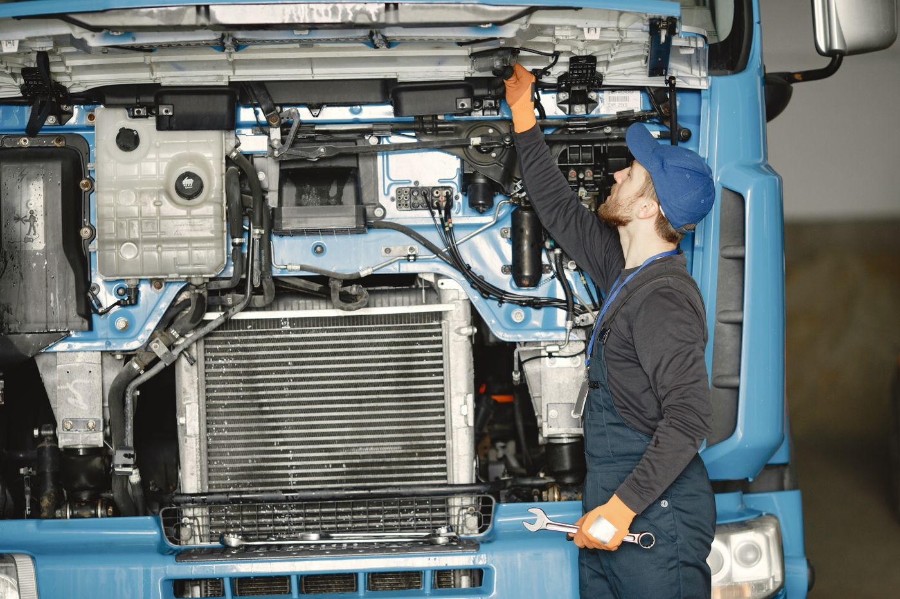

Toyota Tundra Camshaft Recall: 62,000 Trucks, but It Isn't Official Yet
Toyota is preparing a voluntary safety recall covering roughly 62,000 Tundra pickups, according to a dealer notice obtained by The Drive and published on November 13, 2026. Affected engines could lose motive power if a camshaft fails. As of November 17, 2026, no camshaft recall for these trucks appe
Nothing is official yet. As of today no camshaft recall for these trucks appears in NHTSA’s public database — everything comes from a dealer memo reported on 13 November 2026. If you own a 2022-2023 or 2025-2026 Tundra, wait to be contacted; there is no campaign number to book an inspection against.
The gap nobody reports: the recall covers about 62,000 trucks but Toyota estimates only 300 affected camshafts. 62,000 is how many have to be checked; 300 is how many actually contain a part from the bad lot — which is why the remedy is an inspection, not an engine replacement.
Toyota is preparing a voluntary safety recall covering roughly 62,000 Tundra pickups, according to a dealer notice obtained by The Drive and published on November 13, 2026. Affected engines could lose motive power if a camshaft fails.
As of November 17, 2026, no camshaft recall for these trucks appears in NHTSA’s public recall database. Everything below on the forthcoming recall comes from that dealer memo. It is not yet an announced recall.
What the memo describes
The covered vehicles are 2022-2023 and 2025-2026 model year Tundras. Three groups are explicitly excluded:
- Hybrid Tundras — not included
- Sequoia SUVs with the same 3.4-liter twin-turbo V6 — not included
- 2024 model year Tundras — not included
That gap at 2024 is unusual for a Tundra recall and is worth noting: if you own a 2024, this notice does not cover you, and there is no stated reason why.
The reported cause is narrow. Affected camshafts came from a single supplier and were confined to one production lot, with Toyota estimating about 300 affected camshafts, each fitted to cylinder bank one. That is a parts-batch problem, not a design flaw across the engine.

The numbers, read carefully
The gap between the two figures in this story is the part most coverage skips.
The recall covers about 62,000 trucks. But Toyota estimates only about 300 affected camshafts exist. Those two numbers are not describing the same group of vehicles.
62,000 is the set of trucks that share a production range with the suspect batch and therefore have to be checked. 300 is the estimated number that actually contain a part from the bad lot. Each of those 300 sits on cylinder bank one of a V6, meaning one of the engine’s two banks carries the part.
So the recall is not “62,000 engines are going to fail.” It is “62,000 engines have to be inspected because we cannot tell from the outside which 300 are affected.” That is why the remedy is an inspection rather than a blanket replacement — at 300 units it is a parts-lot problem, and at 62,000 it would be an engine-replacement programme on the scale of 24V381.
Whether a batch of 300 bad camshafts out of 62,000 trucks justifies the recall is not really a question anyone at Toyota had the option to answer differently. A camshaft that snaps at speed is a total loss of power, and a manufacturer that can identify the lot has no defensible reason to leave the other 61,700 unchecked.
What to do this week
Nothing urgent, and that is the honest answer. Here is the sequence.
Confirm Toyota can reach you. Owner notification goes out by mid-January 2027. If you bought the truck used and never updated the registration, that letter goes to the previous owner. Toyota’s recall lookup takes a VIN and tells you what is open on your specific truck, including the three main-bearing campaigns.
Check whether your truck is already in a main-bearing campaign. This matters more than the camshaft notice. If you are covered by 25V767 or 26V320, you may be eligible for the inspection now, and that inspection is about your engine potentially stalling, which is the same consequence the camshaft issue produces.
Do not book a camshaft inspection. There is no campaign number to book against, so a dealer has nothing to process. Wait for the notice.
There is no interim remedy, no driving restriction, and no instruction to stop using the truck in the memo as reported. About 300 camshafts across roughly 62,000 trucks is a low individual probability — but it is not zero, and if your truck is on the list you will be contacted.
The engine’s history matters here
This is not the first problem for the V35A-FTS twin-turbo V6, and the record is public. There are three separate NHTSA campaigns, and each one expands the last rather than replacing it:
| Campaign | Filed | Vehicles |
|---|---|---|
| 24V381 | May 30, 2024 | 2022-2023 Tundra, Lexus LX600 |
| 25V767 | Nov 6, 2025 | 2022-2024 Tundra, Lexus LX, 2024 Lexus GX |
| 26V320 | May 20, 2026 | 2024 Tundra |
All three describe the same failure: manufacturing debris contaminating a main bearing, causing an engine stall and loss of drive power. NHTSA’s stated consequence for each is identical — “a loss of drive power increases the risk of a crash.”
The remedies, though, have changed in a way owners should understand.
24V381 was the straightforward one. Dealers replaced the engine assembly, free of charge. Owner letters went out between December 17, 2024 and February 19, 2025.
25V767 changed the remedy. Instead of replacing engines, dealers now perform an inspection of the #1 main bearing using vehicle inspection software and drive data, and replace the engine only if that inspection says so. Owner letters were mailed August 28, 2026.
26V320, covering 2024 trucks, carries the same inspection-first remedy and adds a wrinkle: NHTSA’s record says interim letters notifying owners of the safety risk went out July 23, 2026, with additional letters to follow once a final remedy is available. A recall still waiting on its final remedy, more than two years after the first campaign, is the part of this that is least resolved.
The practical point: if your truck is in more than one of these campaigns — which is possible, since each expands the previous — an inspection result under 25V767 or 26V320 is not the same assurance as the outright engine replacement offered under 24V381.
What we could not verify
The recall itself. No NHTSA campaign number exists for a Tundra camshaft defect as of November 17, 2026. We checked the agency’s recall API directly for model years 2022 through 2026 and found engine-related campaigns only for the main-bearing debris issue.
We also cannot confirm which supplier, or the production window of the affected lot — the memo does not say, and Toyota has not published anything.
Owners can check their own VIN at NHTSA’s recall lookup at no cost. That is the authoritative source, and it will show the campaign once Toyota files it.
Sources: The Drive (November 13, 2026) for the dealer notice; NHTSA recall API, queried November 17, 2026, for campaigns 24V381 and 25V767 and for the absence of a camshaft campaign.
Topics
- Tuning